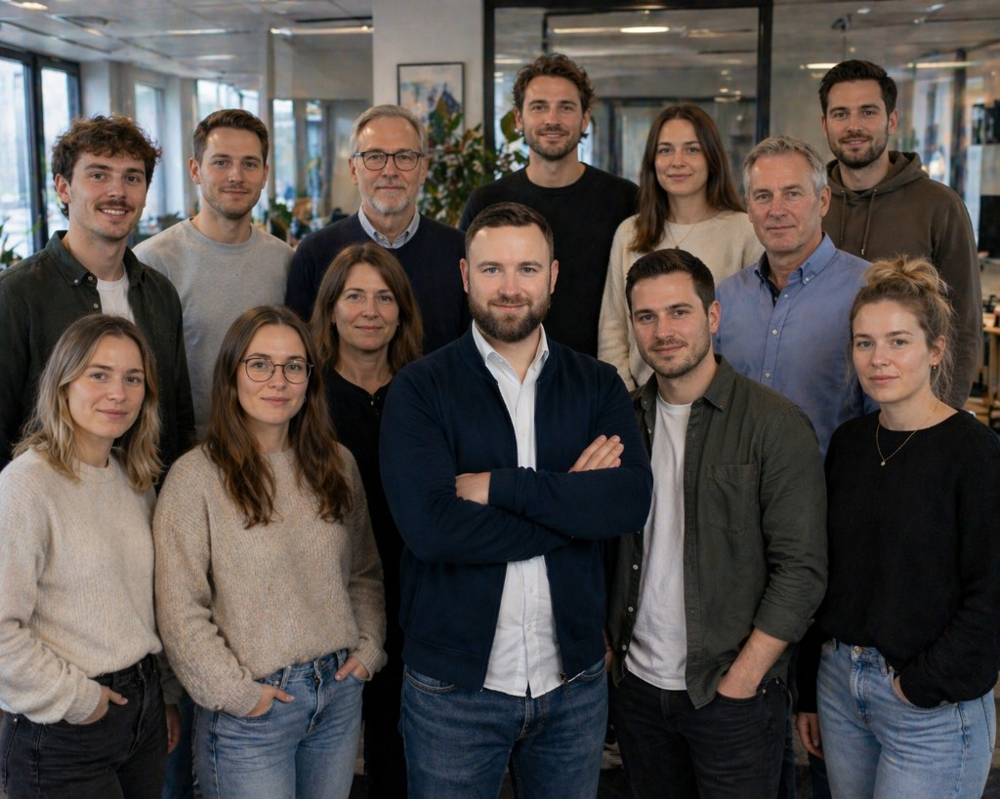

Tragwerksplanung
Innovative und sichere Ingenieurlösungen für Wohn-, Gewerbe- und Bestandsbauten.
Statikbüro24
Professionelle Tragwerksplanung, statische Berechnungen und Nachweise für Neubau, Umbau und Sanierung.
Jetzt zusammen arbeiten
Warum Statikbüro24? Erfahrung, Präzision und digitale Prozesse.
Statik. Gutachten. Tragwerksplanung.
Innovative und sichere Ingenieurlösungen für Wohn-, Gewerbe- und Bestandsbauten.

Präzise Nachweise auf Basis moderner Berechnungsmethoden und langjähriger Erfahrung.

Unterstützung bei statischen Unterlagen für eine reibungslose Genehmigungsphase.

Durchdachte Schallschutzkonzepte mit Blick auf Normen, Nutzung und Wirtschaftlichkeit.

GEG-konforme Lösungen für antragspflichtige Bauvorhaben und energetische Anforderungen.

Bewehrungs- und Schalpläne für tragfähige Konstruktionen in hoher Ausführungsqualität.
Rezensionen aus laufenden und abgeschlossenen Projekten.
★★★★★
„Sehr professionelle Betreuung von der ersten Anfrage bis zur fertigen Statik. Besonders überzeugt haben uns die schnelle Rückmeldung und die klare Kommunikation.“
★★★★★
„Kompetente Tragwerksplanung für unser Mehrfamilienhaus. Änderungen wurden zügig eingearbeitet und die Zusammenarbeit mit Architekt und Prüfstatiker lief reibungslos.“
★★★★★
„Zuverlässig, präzise und termintreu. Der Standsicherheitsnachweis und die Detailpläne waren sehr gut aufbereitet. Wir arbeiten gerne wieder mit Statikbüro24.“
Die wichtigsten Antworten rund um Statik, Nachweise und Bauantrag.
Bei Neubauten, Umbauten, Aufstockungen oder größeren Sanierungen mit Eingriff in die Tragstruktur.
Die Kosten hängen von Größe und Komplexität ab. Nach Erstkontakt erhalten Sie zeitnah ein transparentes Angebot.
Typischerweise Baupläne, Grundstücksdaten, Baugrundinformationen und Angaben zur geplanten Nutzung.
Er erstellt Berechnungen, Nachweise und Pläne für die sichere Tragkonstruktion eines Bauwerks.
Je nach Bundesland Bauherren, Architekten oder Bauingenieure - wir unterstützen bei den statischen Unterlagen.
Sie sind Bauträger, Bauherr, Architekt oder Projektentwickler? Dann erreichen Sie uns telefonisch oder über das Kontaktformular.
Hauptgeschäftsstelle Berlin
Franz-Ehrlich-Straße 12
12489 Berlin
Mobil: +49 (0) 151 685 135 53
Büro: +49 (0) 3362 740 41 83
E-Mail: info@statikbuero-24.de